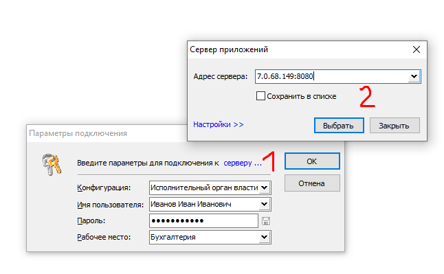

Установка и настройка клиентского программного обеспечения ГИС «Смета ЯНАО» на автоматизированных рабочих местах с использванием VipNet Client
- Установить и настроить вспомогательное программное обеспечение.
VipNET клиент. Необходимо проверить доступность сетевого узла LARM-Sal-CB-ServSmetaSP¶

КриптоПро CSP: https://cryptopro.ru/products/csp/downloads¶
- Загрузить программное обеспечение ГИС «Смета ЯНАО»
Для операционной системы РЕД ОС: https://files.yanao.ru/s/dfn7iAL85Jf5e7e¶
Для операционной системы Windows: https://files.yanao.ru/s/PqieKP4SSB8RGqK¶
- Запустить программное обеспечение ГИС «Смета ЯНАО»
Для операционной системы РЕД ОС:¶
Добавить права на выполнение исполняемого файла stimrun.¶

Рисунок 2 -- Схема ЭДО для ЭД «Заявка-обоснование»

Рисунок 3 -- Ещё рисунок
Убедиться, что у текущего пользователя есть права доступа на запись в текущий каталог (при первом запуске клиент создаст файл инициализации в текущем каталоге).¶
Запустить stimrun, в модальном окне перейте по гиперссылке «адрес сервера».¶

В дополнительном модальном окне в поле «Адрес сервера» добавить адрес сервера авторизации в формате IP:PORT. Узнать адрес сервера авторизации возможно следующими способами.
Для отечественных операционных систем: необходимо запустить приложение ViPNet Client, выбрать «Сетевые узлы», в поиске ввести наименование узла LARM-Sal-CB-ServSmetaSP, либо кратко как на изображении. В выборке посмотреть IP-адрес узла, использовать его вместе с портом 8080. В данном случае адрес сервера авторизации будет выглядеть 7.0.68.149:8080.¶
*Запуск приложения ViPNet Client необходимо осуществлять от имени пользователя, под которым была произведена установка лицензии (dst).

Для операционных систем семейства Microsoft Windows: необходимо запустить приложение ViPNet Client, выбрать «Защищённая сеть», найти узел LARM-Sal-CB-ServSmetaSP, открыть свойства узла, посмотреть реальный IP-адрес узла, использовать его вместе с портом 8080. В данном случае адрес сервера авторизации будет выглядеть 7.0.68.149:8080¶

* В случае использования прокси-сервера в Вашей локально-вычислительной сети необходимо указать параметры прокси-сервера, доступные при переходе по гиперссылке «Настройки»

Если Вы всё сделали правильно, то при выборе в выпадающем списке должен появится список баз данных различных учреждений. Выберите нужно учреждение из списка.
* В случае если в выпадающем списке отсутствует перечень баз данных, значит доступ к серверу ГИС «Смета ЯНАО» ограничен. Причин может быть несколько:
- отсутствие доступа к узлу защищённой сети VipNet - LARM-Sal-CB-ServSmetaSP;
- проблемы на уровне сетевых технологий Вашей локально-вычислительной сети;
- сервер ГИС «Смета ЯНАО» в плановом обслуживании (недоступность не более 40 минут в позднее вечернее время);
- локальные проблемы с операционной системой автоматизированного рабочего места;
- прочие.
В большинстве случаев львиная доля вероятных ошибок на стороне конечного пользователя. В этом случае Вам необходимо предпринимать соответствующие меры по устранению проблем.

Тестовая апробация функционала ГИС «Смета ЯНАО» на примере базы данных департамент по общим вопросам¶
Для апробирования функционала для пользователей создана специальная база данных Департамент по общим вопросам ЯНАО_hidden.drx
Суффикс _hidden означает скрытый контекст в списке подключений. Это сделано для того чтобы не смешивать тестовые базы данных и реальными. Поэтому на данном этапе Вам необходимо скопировать наименование Департамент по общим вопросам ЯНАО_hidden.drx и вставить в поле «Конфигурация».
* В реальности пользователи работают в реальных базах данных, поэтому копирование наименований конфигурации не требуется: достаочно выбора значений из списка.
Далее, после того как наименование конфигурации установлено, и, если всё сделано правильно, то в списке пользователей должен отобразиться перечень пользователей выбранной базы данных. Для теста используйте имя пользователя student
* В реальности имя пользователя = Фамилия Имя Отчество
Далее, введите пароль - 1

Результат авторизации пользователя (выбор конфигурации, имя пользователя, пароль, рабочее место) с максимальным уровнем доступа в рамках базы данных департамента по общим вопросам:¶

Клиентское программное обеспечение для операционных систем Microsoft Windows (адрес сервера подключения может отличаться):¶

Требуется установить сервер обновлений из стабильной ветки дистрибутива (указывается адрес подключения к серверу):¶

Установка и настройка клиентского программного обеспечения ГИС «Смета ЯНАО» на автоматизированных рабочих местах с использованием технологии TLS
(альтернативный способ только в РМТКС ЯНАО).
Для Ред ОС.
Обязательные системные требования:¶
Установлено программное обеспечение КриптоПро CSP 4.0 и выше: https://cryptopro.ru/products/csp/downloads¶
-
Открыть терминал (Ctrl+Alt+T)
-
Команда для суперпользователя su.
-
Вводим пароль суперпользователя.
-
Команда openssl-switch-config gost
-
Команда openssl engine
-
В итоге должно получиться так:

- Команда exit.

- Удалить все файлы из директории stimate (находится в домашней папке пользователя).

- Переместить скачанные файлы stimrun и stimrun.ini в директорию stimate (находится в домашней папке пользователя).
Для операционной системы РЕД ОС: https://files.yanao.ru/s/WfnAMN7MFNayJRR
- В свойствах файла stimrun выставить права как на картинке:

-
Запустить файл stimrun и дождаться установки.
-
При подключении ввести адрес сервера: [https://smeta-app.yanao.ru:443]{.underline}
-
После первого входа из меню \<Настройки> открыть настройки клиента и во вкладке \<Программа> выбрать сервер обновлений win-stim.krista.ru:8080. Также поставить галочку на \<Регистрация для запуска приложения из браузера>

Для MS Windows.
-
Удалить все файлы из директории stimate (находится в папке C:\ Windows).
-
Переместить скачанные файлы stimrun и stimrun.ini в директорию stimate/
Для операционной системы MS Windows: https://files.yanao.ru/s/ZyG8ZHPzMSxt3BN
-
Запустить файл stimrun и дождаться установки.
-
При подключении ввести адрес сервера: [https://smeta-app.yanao.ru:443]{.underline}
-
После первого входа из меню \<Настройки> открыть настройки клиента и во вкладке \<Программа> выбрать сервер обновлений win-stim.krista.ru:8080. Также поставить галочку на \<Регистрация для запуска приложения из браузера>